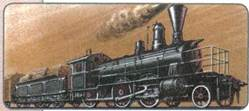
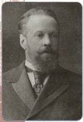
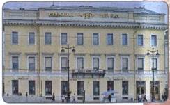

На каком уровне развития находилась экономика России в начале XX в.? Какие важнейшие задачи необходимо было решить в сфере экономики?
1. Российская экономика на рубеже XIX—XX вв.
Вы знаете, что индустриальное общество характеризуется преобладанием промышленного производства над сельским хозяйством. Россия в конце XIX — начале XX в. оставалась сельскохозяйственной страной, но её промышленность переживала бурный подъём.
Толчком к росту производства стало железнодорожное строительство, которое возобновилось в 1893 г. после нескольких лет относительного затишья. Сеть железных дорог увеличивалась в 1895—1899 гг. в среднем более чем на 3 тыс. км в год, в следующие пять лет — более чем на 2 тыс. км в год. Огромное значение для развития промышленности и сельского хозяйства имело строительство Транссибирской магистрали (1891—1916).
Строительство железных дорог способствовало увеличению производства металла, продукции тяжёлого машиностроения, угля, леса и других материалов. Особенно быстрыми темпами развивались отрасли народного хозяйства, связанные с новыми видами топлива — углём и нефтью, добыча которых увеличилась в 3 раза. В целом выпуск продукции тяжёлой промышленности увеличился в 2,3 раза. Темпы промышленного роста в России были самыми высокими в мире — до 8,1% в год.

Паровоз XIX в.
Несмотря на высокие темпы развития промышленного производства, Россия значительно отставала от мировых держав по качественным показателям экономики. Так, национальный доход в расчёте на одного человека составлял 89 р. в год, что было в 5—8 раз меньше, чем в развитых странах. По объёму промышленного производства на одного человека и уровню производительности труда в промышленности Россия также уступала этим странам в 5—10 раз. По уровню социально-экономического развития она являлась среднеразвитой аграрно-индустриальной страной, имеющей значительный потенциал.
Россия в начале XX в. была страной с многоукладной экономикой. Наряду с новейшим капиталистическим производством значительное место в её экономике занимало мелкотоварное (ремесленное, кустарное) и даже натуральное хозяйство (вспомните значение этого термина).
2. Роль государства в экономике
Важной особенностью экономики России было наличие в ней крупного государственного сектора. Из чего складывался этот сектор? Его ядром были казённые (от слова «казна») заводы, которые удовлетворяли военные нужды государства. Эти заводы принадлежали государству и им же финансировались. Единственным заказчиком и покупателем их продукции являлось государство, а управлялись они государственными чиновниками. В начале XX в. крупнейших казённых заводов было около 30: Тульский, Ижевский, Сестрорецкий, Обуховский, Ижорский и др. Кроме того, государству принадлежали свыше 2/3 железнодорожной сети, огромные земельные и лесные угодья, почтовая и телеграфная связь.
Роль государства в экономике России этим не исчерпывалась. Правительство влияло на хозяйственную деятельность частных предприятий: регулировало цены; защищая российскую промышленность, вводило высокие таможенные пошлины; раздавало казённые заказы частным компаниям и фирмам; предоставляло им кредиты через Государственный банк.
3. Иностранный капитал
Государство создавало благоприятные условия для привлечения иностранного капитала. Важную роль сыграла проведённая в 1897 г. по инициативе министра финансов С. Ю. Витте денежная реформа. Она ввела золотое обеспечение рубля, свободный обмен бумажных денег на золото.
В начале XX в. иностранные инвестиции в российскую экономику составляли почти 40 % всех капиталовложений.

С. Ю. Витте
Активное привлечение иностранного капитала не привело к созданию иностранных зон влияния, к полной или даже частичной зависимости России от иностранных компаний и государств. Иностранные компании и банки не вели самостоятельной экономической политики, не имели возможности влиять на политические решения. Приходя в Россию, иностранный капитал сращивался с капиталом отечественным, расширялись возможности для включения России в мировую экономическую систему.
Участие иностранного капитала в экономике России имело и свои минусы: власть не рассматривала проблему поиска внутренних резервов для развития экономики страны; часть прибыли, которая могла бы приумножить национальное богатство страны, расширить капиталовложения, повысить жизненный уровень населения, уходила за границу.
4. Российский монополистический капитализм
В 1900—1903 гг. европейские страны потряс мощный экономический кризис. Он ударил и по российской экономике. Сильнее других пострадала тяжёлая промышленность, особенно такие её отрасли, как металлургия, металлообработка, машиностроение, добыча и переработка нефти. Кризис стал причиной гибели множества предприятий, слабых в финансовом, организационном или техническом отношении. За три года было закрыто свыше 3 тыс. предприятий, на которых было занято 112 тыс. рабочих. Эти предприятия не выдержали конкурентной борьбы. Значительно сократилось железнодорожное строительство.
Ответом капиталистической экономики на кризис стало усиление концентрации производства и создание монополий. Напомним, что, создавая монополии, собственники отдельных предприятий договаривались об объёмах производства, ценах, рынках сбыта сырья и других вопросах.
Из курса Новой истории вы знаете, что концентрация промышленного производства проявляется в укрупнении предприятий. Одной из причин этого было развитие новейшей техники. А какова другая причина? Почему отдельные предприятия объединялись друг с другом и создавали монополии?
Формы монополий были различными. Создавались картели, синдикаты, тресты, позднее появились концерны. Основной формой монополий в России стали синдикаты. Они повели борьбу за полное подчинение ведущих отраслей хозяйства. Так, синдикат «Продамета» (1901), объединявший в момент своего возникновения 12 металлургических заводов юга России, в 1904 г. контролировал сбыт 60%, а в 1912г. — около 80 % металлургической продукции страны. Под контролем синдикатов «Продуголь», «Продвагон», «Гвоздь» находились соответствующие отрасли промышленности. Картель «Нобель-Мазут» безраздельно господствовал в нефтяной промышленности.
Монополии возникли и в банковской системе.
Пять крупнейших банков контролировали почти половину финансовых операций в стране. Постепенно они начинали теснить иностранные капиталы, становясь основными инвесторами отечественной промышленности.

Здание бывшего Волжско-Камского банка в Санкт-Петербурге
5. Сельское хозяйство
К началу XX в. Россия занимала первое место в мире по общему объёму сельскохозяйственной продукции. На её долю приходилось 50 % мирового сбора ржи, около 20 % пшеницы и 25 % мирового экспорта зерна. Быстрыми темпами увеличивалось производство сахарной свёклы, льна, технических культур. Росли поголовье и продуктивность скота.
Успехи были, но положение в сельском хозяйстве России в целом определяли не они. Современники говорили об оскудении центра. В губерниях Центральной России преобладали полусередняцкие и бедняцкие хозяйства. Товарной (специально предназначенной для продажи) продукции они не производили. Поля обрабатывались старыми способами — сохой и деревянной бороной. Нехватка скота и денег не позволяла вносить достаточного количества удобрений. Урожайность была низкой, крестьяне если и продавали хлеб на рынке, то потом им приходилось голодать. Катастрофическим следствием был массовый голод в неурожайные годы. Крестьяне были убеждены, что положение сможет измениться лишь тогда, когда они получат в своё распоряжение часть помещичьей земли, которая использовалась крайне неэффективно.
На более чем 20 млн крестьянских хозяйств приходилось 130 тыс. помещичьих имений. По подсчётам специалистов, для нормального существования семьи из 6 человек в чернозёмной полосе требовалось 10,5 десятины пашни. В действительности на одно крестьянское хозяйство приходилось около 7 десятин. Оскудение центра дополнялось аграрным перенаселением — историки говорят о 20 млн «лишних ртов», не находивших применения в деревне. Ситуацию осложняло сохранение общины. В начале XX в. 4/5 надельной крестьянской земли находилось в общинном пользовании.
Община производила регулярный передел земли между своими членами, зорко следя, чтобы земли всем досталось поровну. Население Российской империи между тем ежегодно увеличивалось на 2,5 млн человек, в основном за счёт крестьянства. При очередном переделе в каждом крестьянском хозяйстве земли оставалось всё меньше и меньше.
Недостатки общинного землевладения становились всё более очевидными: община, спасавшая слабых, тормозила деятельность крепких, хозяйственных крестьян; она стремилась к относительному равенству, но препятствовала повышению общего благосостояния деревни.
ПОДВЕДЁМ ИТОГИ
Россия в начале XX в. была среднеразвитой аграрно-индустриальной страной с многоукладной экономикой. Первоочередной являлась задача модернизации сельского хозяйства. Развитие сельского хозяйства чрезвычайно тормозили низкая товарность крестьянских хозяйств, малоземелье крестьян и сохранение общины.
Вопросы и задания для работы с текстом параграфа
1. Каковы были особенности российской экономики начала XX в.? 2. Назовите важнейшие формы государственного вмешательства в экономику, имевшие место в Российской империи на рубеже XIX—XX вв. В чём заключались отрицательные и положительные стороны государственного вмешательства в экономику? 3. Каковы причины широкого привлечения в страну иностранного капитала? 4. Какую роль в экономике России играли монополии? 5. Что мешало развитию сельскохозяйственного производства? 6. Какую роль играла сельская община в развитии сельского хозяйства Российской империи в начале XX в.?
Думаем, сравниваем, размышляем
1. Какое значение для развития российской экономики имели иностранные инвестиции? 2. Можно ли считать сельское хозяйство России в начале XX в. товарным? Аргументируйте свой ответ. 3. О каких особенностях российской экономики говорит определение России как аграрно-индустриальной страны? 4. С помощью материалов Интернета подготовьте сообщение, в котором сравните профсоюзы, существовавшие в странах Западной Европы и в России на рубеже XIX—XX вв. Сделайте выводы.